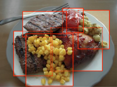

Friday, June 26:
 We have launched a Survey of Clinicians' Experiences with Telemedicine Tools During Covid-19. What aspects of telemedicine appointments can go better than in-person visits? What clever innovations do clinicians use to deliver high quality care using telemedicine? Share your experiences and see responses of your colleagues.
We have launched a Survey of Clinicians' Experiences with Telemedicine Tools During Covid-19. What aspects of telemedicine appointments can go better than in-person visits? What clever innovations do clinicians use to deliver high quality care using telemedicine? Share your experiences and see responses of your colleagues.
Wednesday, May 20: Our paper showing that Proxy Tasks and Subjective Measures Can Be Misleading in Evaluating Explainable AI Systems was recognized as a best paper at the ACM IUI'20 conference. Here is a blog post summarizing the work.
2019
Monday, March 18:
 A paper, SUPPLE: automatically generating user interfaces, which Krzysztof and Dan Weld published in 2004, was recognized with The Most Impact Paper Award at IUI 2019. Here is a brief synthesis of the paper and the work that followed it.
A paper, SUPPLE: automatically generating user interfaces, which Krzysztof and Dan Weld published in 2004, was recognized with The Most Impact Paper Award at IUI 2019. Here is a brief synthesis of the paper and the work that followed it.
2018
Saturday, August 3:
 We have just learned that Lahiru Jayatilaka's paper PETALS: Improving Learning of Expert Skill in Humanitarian Demining was recognized as a Best Paper of ACM COMPASS 2018.
We have just learned that Lahiru Jayatilaka's paper PETALS: Improving Learning of Expert Skill in Humanitarian Demining was recognized as a Best Paper of ACM COMPASS 2018.
2017
Wednesday, Feb 1:
Our new paper in Environmental Health Perspectives: a system to report back individual results of biomonitoring studies to study participants. In the past, researchers feared that people could not handle the complex and potentially upsetting information about what chemicals were found in their tissues and environment. No more. If results are presented correctly, participants can understand and act on the results. Our system makes it easier to author and deliver personalized results at scale.
This work was led by our colleagues at the Silent Spring Institute.
Monday, January 16:
Our upcoming HRI'17 paper led by Serena Booth: can a robot talk its way into an access-controlled student dormitory? Robot succeeded in getting past the locked door 19% of the time when it asked an individual student to let it enter. When it asked a group of students, it succeed 76% of the time! But when the robot was dressed as a food delivery agent for the fictional start-up Robot Grub (and was carrying a box of cookies in a clear case), individuals suddenly became much more trusting: 71% of the individuals allowed the cookie-carrying robot into the dorm. Surprisingly, people who identified the robot as a potential bomb threat were just as likely to open the door as those who did not.
These results demonstrate the existence of overtrust---the belief that the robot does not intend to deceive or carry risk.

Monday, January 9:
 Our upcoming ACM IUI 2017 paper reports new findings from the Multitasking Test on LabintheWild: given a choice to either do more clicking or exert more mental effort to get a job done, introverts and people with high need for cognition lean toward more mental effort, while extroverts and people with low need for cognition click more. This suggests that not all people benefit equally from some of the effort saving features of modern user interfaces. For more, see a blog entry that contextualizes the findings or read the paper.
Our upcoming ACM IUI 2017 paper reports new findings from the Multitasking Test on LabintheWild: given a choice to either do more clicking or exert more mental effort to get a job done, introverts and people with high need for cognition lean toward more mental effort, while extroverts and people with low need for cognition click more. This suggests that not all people benefit equally from some of the effort saving features of modern user interfaces. For more, see a blog entry that contextualizes the findings or read the paper.
2016
Wednesday, August 10:
A new paper: Acceptance of Mobile Technology by Older Adults: A Preliminary Study" led by Sunyoung Kim, to be presented at MobileHCI '16 in Florence.
This paper captures the results of our deep dive into the grounded theory method to understand how older adults make decisions about adopting (or not adopting) new mobile technologies. A key finding is that even if an older adult perceives a technology as useful and easy to use by others, they may still decide that the technology is too difficult for them to learn. This explicit stage of evaluating the ease of learning a new technology appears to be specific to older adults and does not appear in other technology adoption models.
Tuesday, July 12:
 Ofra Amir presented our paper introducing Mutual Influence Potential Networks: Enabling Information Sharing in Loosely-Coupled Extended-Duration Teamwork at IJCAI'16. This paper contributes to our larger effort to understand and support teamwork in complex healthcare.
Ofra Amir presented our paper introducing Mutual Influence Potential Networks: Enabling Information Sharing in Loosely-Coupled Extended-Duration Teamwork at IJCAI'16. This paper contributes to our larger effort to understand and support teamwork in complex healthcare.
2015
Monday, December 14:
We have our first 5 papers accepted for presentation in 2016 (at CHI, IUI and L@S):
Friday, March 27:
Our paper showing that Providing timely examples improves the quantity and quality of generated ideas" has been accepted to the ACM Creativity and Cognition conference. This is part of our larger effort to develop computational tools to support collective creative experience.
Monday, March 2:
Our CSCW'15 paper on LabintheWild and our CHI'15 paper on Opportunities for Computer Support of Teamwork in Complex Healthcare
have each been recognized with an honorable mention at their respective conferences.
Wednesday, February 11:
MIT has just put out a press release about our work on learnersourcing.
Friday, January 9:
Our CHI'15 paper on Opportunities for Computer Support of Teamwork in Complex Healthcare is now available online.
2014
Monday, November 3:
Our CSCW'15 paper Toward Collaborative Ideation at Scale -- Leveraging Ideas from Others to Generate More Creative and Diverse Ideas" is now available online!
Sunday, November 2:
Our Learnersourcing paper for CSCW is now available. Learnersourcing is an approach in which intrinsically motivated learners contribute to a human computation workflow as they naturally engage in a meaningful learning activity. Want to see what this looks like? Check out our Crowdy system for learnersourcing subgoal labels for tutorial videos.
Tuesday, October 14:
 Our CSCW paper on LabintheWild is ready.
Our CSCW paper on LabintheWild is ready.
Monday, September 1:
We will be presenting three papers at CSCW'15:
- "Toward Collaborative Ideation at Scale — Leveraging Ideas from Others to Generate More Creative and Diverse Ideas" -- new crowd- and machine learning--powered system to pick out sets of diverse high quality examples of ideas generated by earlier contributors to inspire future contributors. Increases quality and diversity of generated ideas.
- "Learnersourcing Subgoal Labels for How-to Videos" -- today's learners make tutorial videos even better for future learners by contributing to non-trivial human computation tasks as a byproduct of doing things that they are already motivated to do.
- "LabintheWild: Conducting Large-Scale Online Experiments With Uncompensated Samples" -- data obtained through LabintheWild are as good as the data collected in traditional lab-based studies.
Final versions of these papers will be online in a few weeks.
 Monday, July 7:
LabintheWild is turning 2!
Monday, July 7:
LabintheWild is turning 2!
Tuesday, May 20:
Want to learn web programming? Check out Crowdy, a better way to learn from video tutorials. This project is run by our frients at MIT CSAIL.
Thursday, May 15:
Together with Ken Nakayama (psychology), Ryan Enos (government), we received a grant from the Harvard Initiative for Learning and Teaching for integrating online behavioral research modules into the classroom. Essentially, we want to bring the kind of experiential learning (lecture demonstrations, open-ended labs) that is common in natural sciences to education in psychology, social sciences and HCI.
Sunday, April 27:
 Steve presented his work on Organic Peer Assessment at the Learning Innovation at Scale workshop at CHI.
Steve presented his work on Organic Peer Assessment at the Learning Innovation at Scale workshop at CHI.
Friday, January 24: The final version of our paper on Understanding In-Video Dropouts and Interaction Peaks in Online Lecture Videos (to appear at Learning at Scale conference) is now available.
Sunday, January 19: Curio and Lab in the Wild are featured in an article on Popular Science in the current issue of Harvard Magazine.
Friday, January 17: The final versions of our CHI'14 papers are now available:
Friday, January 17: The final versions of our IUI'14 papers are now available:
2013
Friday, December 20: Our paper on Understanding In-Video Dropouts and
Interaction Peaks in Online Lecture Videos led by Juho Kim has been accepted to Learning at Scale.
Monday, December 9: Two of our papers got accepted to CHI: "Quantifying Visual Preferences Around the World" led by Katharina Reinecke and "Crowdsourcing Step-by-Step Information Extraction to Enhance Existing How-to Videos" led by Juho Kim.
 Thursday, December 5: Our two papers got accepted to ACM IUI: "Adaptive Click-and-Cross: Adapting to Both Abilities and Task Improves Performance of Users With Impaired Dexterity" led by Louis Li and "Active Learning of High-Level Knobs for Synthesis with Gaussian Processes" led by Anna Huang.
Thursday, December 5: Our two papers got accepted to ACM IUI: "Adaptive Click-and-Cross: Adapting to Both Abilities and Task Improves Performance of Users With Impaired Dexterity" led by Louis Li and "Active Learning of High-Level Knobs for Synthesis with Gaussian Processes" led by Anna Huang.
Thursday, November 14: Today we ran a panel on Taking Research Out Into the Wild. Main message: engaging broader publics over the internet (either as participants or as collaborators) makes answering entirely new kinds of questions possible and it does not require superhuman abilities or resources.
 Sunday, October 27: In collaboration with the Center for Research on Computation and Society (CRCS), we are now accepting applications for 1- or 2-year Postdoctoral Fellowships. Consider applying even if you are currently seeking a faculty position. Many schools will let you defer your faculty position for a year and a Fellowship at CRCS is a great way to develop your research agenda and to expand your research network.
Sunday, October 27: In collaboration with the Center for Research on Computation and Society (CRCS), we are now accepting applications for 1- or 2-year Postdoctoral Fellowships. Consider applying even if you are currently seeking a faculty position. Many schools will let you defer your faculty position for a year and a Fellowship at CRCS is a great way to develop your research agenda and to expand your research network.
 Friday, October 25: Our team (led by Mary Regan at UMD School of Nursing) received an R01 NIH grant to study the behavioral and nutritional factors impacting pre-term birth. A key technical enabler of this project is a mechanism, based on our PlateMate system, for scalable nutritional analysis, which will make it possible to track the nutritional intake of 400 pregnant women for several months each.
Friday, October 25: Our team (led by Mary Regan at UMD School of Nursing) received an R01 NIH grant to study the behavioral and nutritional factors impacting pre-term birth. A key technical enabler of this project is a mechanism, based on our PlateMate system, for scalable nutritional analysis, which will make it possible to track the nutritional intake of 400 pregnant women for several months each.
Monday, October 21: Louis Li presented a poster on his work on Adaptive Click-and-Cross at the ACM ASSETS conference. Adaptive Click-and-Cross combines several adaptive mechanisms (which were previously studied in isolation) to improve the efficiency of computer access for people with impaired dexterity.
 Wednesday, October 16: Our paper reporting on an Evaluation of filesystem provenance visualization tools was presented today at IEEE InfoVis.
Wednesday, October 16: Our paper reporting on an Evaluation of filesystem provenance visualization tools was presented today at IEEE InfoVis.
Saturday, October 12: The first results from the age guessing experiment: 17-year olds are the most efficient clickers. Past the age of 25, we all get slower at a steady rate for the rest of our lives. Read more...
Sunday, Sept 22: Reminder: CrowdCamp applications are due on Sept 25! Next CrowdCamp (a two-day hack-a-thon for prototyping novel crowd-powered ideas) will take place at HCOMP'13 and will be lead by a great team: Lydia Childton (UW), Juho Kim (MIT) and Pao Siangliulue (Harvard).
 Sunday, September 8: At HCOMP 2013, we will present a demo of Curio, a crowdsourcing platform that connects interested citizens with researchers to help answer important questions in the sciences and humanities.
Read the abstract.
Sunday, September 8: At HCOMP 2013, we will present a demo of Curio, a crowdsourcing platform that connects interested citizens with researchers to help answer important questions in the sciences and humanities.
Read the abstract.
 Saturday, July 20: At long last, we have published a data set to accompany our 2011 PlateMate paper. The data set contains 16 out of the 18 images we used to evaluate PlateMate's accuracy. The data set also includes the ground truth nutritional info for each photograph, expert estimates, as well as PlateMate's estimates.
Saturday, July 20: At long last, we have published a data set to accompany our 2011 PlateMate paper. The data set contains 16 out of the 18 images we used to evaluate PlateMate's accuracy. The data set also includes the ground truth nutritional info for each photograph, expert estimates, as well as PlateMate's estimates.
Monday, June 24: We are gearing up to launch Curio, a crowdsourcing platform that connects interested citizens with researchers to help answer important questions in the sciences and humanities. Sign up now to receive an early access invitation!
Friday, May 31: More than 500,000 people have participated in experiments on Lab in the Wild.
Friday, April 19: More than 100,000 people have participated in experiments on Lab in the Wild.
Sunday, March 10: Our SPRWeb paper will receive a best paper award at CHI 2013 and our paper on predicting first impressions of web site aesthetics will get an honorable mention. Both will be presented in the Aesthetics and the Web session on Wednesday morning.
Tuesday, March 5: A few days ago at CrowdCamp, we have experimented with new ways to elicit creative ideas from crowds by combining techniques from Design, Improv Theater, Crowdsourcing, and AI. Here's our story.
Saturday, January 26: The final versions of our CHI'13 papers are now available:
Supplementary materials will be available soon.
2012
 Wednesday, November 27: Our CSCW'13 paper Doodle Around the World: Online Scheduling Behavior Reflects Cultural Differences in Time Perception and Group Decision-Making is now available. So are the data!
Wednesday, November 27: Our CSCW'13 paper Doodle Around the World: Online Scheduling Behavior Reflects Cultural Differences in Time Perception and Group Decision-Making is now available. So are the data!
Friday, November 16: Postdoctoral positions available. In collaboration with the Harvard Center for Research on Computation and Society (CRCS), I am soliciting applications for a postdoctoral fellowship from candidates interested in developing and evaluating technologies for personalized adaptive accessibility. The ideal candidates would have background in HCI and accessibility and some interest in AI. We are looking for people who can build as well as study. Applications are due by December 16. Apply even if you are looking for faculty positions: a number of CRCS fellows already have faculty positions when they join, but they choose to defer for a year to build up their research agendas and connections at CRCS. Apply here.
Wednesday, October 17: Our paper titled "Doodle Around the World: Online Scheduling Behavior Reflects Cultural Differences in Time Perception and Group Decision-Making" got accepted for presentation at CSCW'13. We will make the manuscript and the data available in a few weeks.
Wednesday, July 25: How we perceive and process information can differ depending on where we grew up. Visit our newly launched Lab In The Wild to find out where you are really from.
Thursday, May 10: Source code and data are now available for our CHI'12 paper on Accurate Measurements of Pointing Performance from In Situ Observations.
Monday, May 7: Our paper on Human Computation Tasks with Global Constraints received an honorable mention at CHI 2012.
Summer research positions for Harvard undergraduates!
Are you interested in psychology? Fascinated by computer science?
Want to combine both? We are looking for 3-5 Harvard undergrads in psychology or computer science (MBB students particularly welcome!) to join a fascinating and paid summer project between both departments. Your job will be to design, implement, and deploy large-scale web-based experiments testing how people perceive and process information, how these abilities vary across cultures, and what consequences these differences might have for user interface design.
We are looking for people proficient with the basic web programming techniques (JavaScript, PHP, jQuery, etc.).
Interested? Contact Katharina Reinecke or me for more details.
Thursday, March 1: "We argue that it is both the possibility and the efficiency of access that are necessary for meaningful and equitable participation of society." -- read about our take on the future of accessibility (and how it ties with AI, intelligent user interfaces, and mobile computing) in the March-April issue of ACM interactions.
2011
Wednesday, November 2:
Our PlateMate project featured in the Harvard Gazette, Boston Globe, Gizmag, and others.
Thursday, August 4: The final version of the PlateMate paper is now available

Monday, June 20: Our work on PlateMate, a system for crowdsourcing nutrition analysis from food photographs, got accepted for publication at UIST 2011. We will post the full paper in the next few weeks.
Wednesday, May 25: Interview with Lahiru on the HCI For Peace blog.
Thursday, May 5: Our landmine work in Harvard Gazette: Targeting leftover land mines.
Friday, January 14: The final version of our CHI'11 paper Evaluating a Pattern-Based Visual Support Approach for Humanitarian Landmine Clearance is now available.
2010
Tuesday, November 23: Our workshop on Dynamic Accessibility: Detecting and
Accommodating Differences in Ability and Situation
(co-organized with collaborators from UMBC, University of Washington,
and IBM Research) has been accepted for CHI 2011. The goal of this
workshop is to bring together researchers and practitioners in
accessibility, mobile HCI, and interactive intelligent systems who are
pursuing agile, data-driven approaches that enable interactive systems
to adapt or become adapted to the needs and abilities of a particular
individual in a particular context. Tbe workshop is motivated by an
observation that human abilities are idiosyncratic and may change
frequently. Static one-size-fits-many accessibility solutions miss the
opportunities that arise from careful consideration of an individual's
abilities and fail to address the sometimes dynamic aspect of those
abilities, such as when a user's activity or context causes a
"situational impairment." See the call for participation or the extended
abstract.
Sunday, July 4: PETALS Project and Lahiru get featured in Sri Lankan Sunday Times.
Friday, May 21: Our definitive article on Supple has been accepted for publication by Artificial Intelligence and has been already published online (date of the paper publication will be made available later). Here's the authors' version of the article.
Friday, May 7: Lahiru Jayatilaka is named as one of the recipients of the Harvard Hoopes Prize for his work on a visual decision support system for landmine detection. The Hoopes Prize is awarded to Harvard undergraduates in recognition of outstanding scholarly work or research.
 On Thursday, January 28 at 7pm join BostonCHI Labs
for CHI Bar: hang out, eat, drink, and meet other HCI researchers and students at
Muddy Charles Pub at MIT
(moved from Cambridge Brewing Company because of an event taking place there).
On Thursday, January 28 at 7pm join BostonCHI Labs
for CHI Bar: hang out, eat, drink, and meet other HCI researchers and students at
Muddy Charles Pub at MIT
(moved from Cambridge Brewing Company because of an event taking place there).
 January 21, 2010 The web site for the ACM Transactions on Interactive Intelligent Systems (TiiS) has just been launched.
January 21, 2010 The web site for the ACM Transactions on Interactive Intelligent Systems (TiiS) has just been launched.
 January 8, 2010 The special issue of the AI Magazine on Usable AI is out. It includes our paper characterizing the Design Space and Evaluation Challenges of Adaptive Graphical User Interfaces.
January 8, 2010 The special issue of the AI Magazine on Usable AI is out. It includes our paper characterizing the Design Space and Evaluation Challenges of Adaptive Graphical User Interfaces.